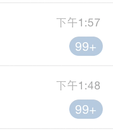
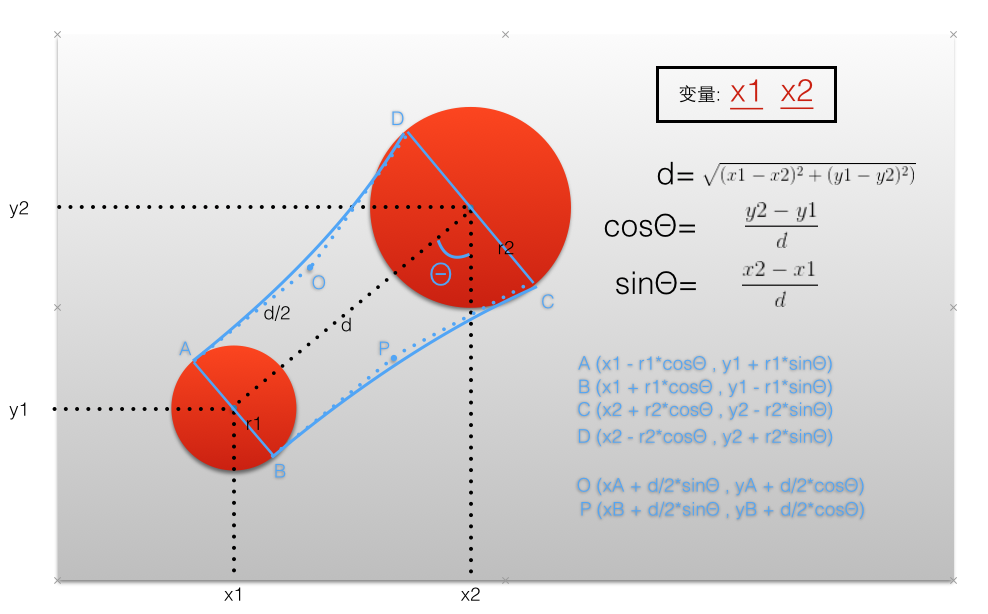

QQ中针对强迫症有个很棒的交互，对于那些暂时不想理会的未读信息气泡，可以直接手指拖拽去掉。  今天我们就来重现一下这个功能。最终用到一个项目中的效果类似这样。
说到实时的形变，我立马想到的还是 CADisplayLink + UIBezierPath 的神奇组合！具体细节可以参考一下我之前的一篇博文。 【2015.6.14更新】由于屏幕刷新频率和手指拖动的速度无法保持一致，故会出现看到尖角的bug。最终我在panGesture 中的UIPanGestureStateChanged中去实时重绘贝塞尔曲线，完美解决！
这个交互中，难点在于如何绘制贝塞尔曲线。而线又是由点组成的。所以最终归根结底我们还是要找个关键点的坐标。一图胜千言。下面，我绘制了一幅分析图，这样一来问题就转化成了一个高中数学求点坐标的题目了。 
Tips: OA ⊥ AB, PB ⊥ AB ,且 OA=PB=d/2.
现在我们已经有了数学表达式，接下来就是要把数学表达式转化成代码了。
我们需要创建一系列变量：
CGFloat r1; // backView
CGFloat r2; // frontView
CGFloat x1;
CGFloat y1;
CGFloat x2;
CGFloat y2;
CGFloat centerDistance;
CGFloat cosDigree;
CGFloat sinDigree;
CGPoint pointA; //A
CGPoint pointB; //B
CGPoint pointD; //D
CGPoint pointC; //C
CGPoint pointO; //O
CGPoint pointP; //P
接下来我们需要一个毫秒级定时器 CADisplayLink。
displayLink = [CADisplayLink displayLinkWithTarget:self selector:@selector(displayLinkAction:)];
根据数学公式，在 displayLink 绑定的方法 displayLinkAction 中把每个坐标点用代码表达出来：
x1 = backView.center.x;
y1 = backView.center.y;
x2 = self.frontView.center.x;
y2 = self.frontView.center.y;
//d
centerDistance = sqrtf((x2-x1)*(x2-x1) + (y2-y1)*(y2-y1));
//sinΘ 和 cosΘ
if (centerDistance == 0) {
cosDigree = 1;
sinDigree = 0;
}else{
cosDigree = (y2-y1)/centerDistance;
sinDigree = (x2-x1)/centerDistance;
}
pointA = CGPointMake(x1-r1*cosDigree, y1+r1*sinDigree); // A
pointB = CGPointMake(x1+r1*cosDigree, y1-r1*sinDigree); // B
pointD = CGPointMake(x2-r2*cosDigree, y2+r2*sinDigree); // D
pointC = CGPointMake(x2+r2*cosDigree, y2-r2*sinDigree);// C
pointO = CGPointMake(pointA.x + (centerDistance / 2)*sinDigree, pointA.y + (centerDistance / 2)*cosDigree);
pointP = CGPointMake(pointB.x + (centerDistance / 2)*sinDigree, pointB.y + (centerDistance / 2)*cosDigree);
通过这些点，就可以画出贝塞尔曲线了：
-(void)drawRect{
backView.center = oldBackViewCenter;
backView.bounds = CGRectMake(0, 0, r1*2, r1*2);
backView.layer.cornerRadius = r1;
cutePath = [UIBezierPath bezierPath];
[cutePath moveToPoint:pointA];
[cutePath addQuadCurveToPoint:pointD controlPoint:pointO];
[cutePath addLineToPoint:pointC];
[cutePath addQuadCurveToPoint:pointB controlPoint:pointP];
[cutePath moveToPoint:pointA];
if (backView.hidden == NO) {
shapeLayer.path = [cutePath CGPath];
shapeLayer.fillColor = [fillColorForCute CGColor];
[self.containerView.layer insertSublayer:shapeLayer below:self.frontView.layer];
}
}
大致实现思路还是很清晰的，无非在分析如何计算6个关键点的时候需要花点时间。